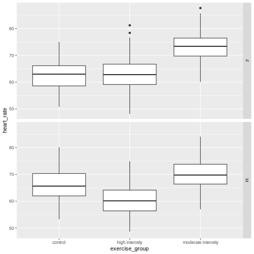
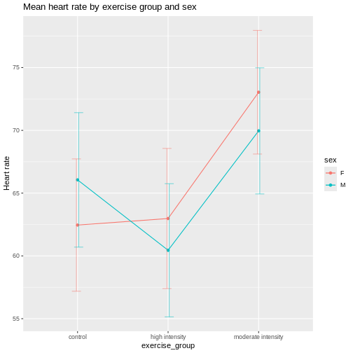
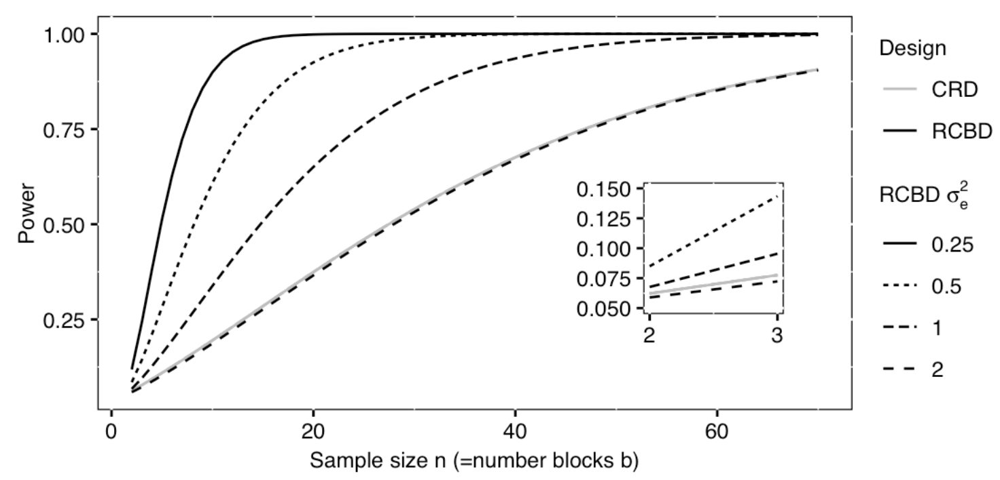

Randomized Complete Block Designs
Last updated on 2025-08-12 | Edit this page
Overview
Questions
- What is randomized complete block design?
Objectives
- A randomized complete block design randomizes treatments to experimental units within the block.
- Blocking increases the precision of treatment comparisons.
Blocking of experimental units, as presented in an earlier episode on Experimental Design Principles, can be critical for successful and valuable experiments. Blocking increases precision in treatment comparisons relative to an unblocked experiment with the same experimental units. A randomized block design can be thought of as a set of separate completely randomized designs for comparing the same treatments. Each member of the set is a block, and within this block, each of the treatments is randomly assigned. We can assess treatment differences within each block and determine whether treatment differences are consistent from block to block. In other words, we can determine whether there is an interaction between block and treatment.
Design issues
The first issue to consider in this case is whether or not to block the experiment. Blocks serve to control natural variation among experimental units, and randomization within blocks accounts for “nuisance” variables or traits that are likely associated with the response. Shelf height and resulting differences in illumination is one example of a nuisance variable. Other variables like age and sex are characteristics of experimental units that can influence the treatment response. Blocking by sex and other characteristics is a best practice in experimental design.
In an earlier episode on Completely Randomized Designs, we presented the Generation 100 Study of 3 exercise treatments on men and women from 70 to 77 years of age. In the actual study, participants were stratified (blocked) by sex and cohabitation status (living with someone vs. living alone) to form 4 blocks. The three treatment levels (control, moderate- and high-intensity exercise) were randomly assigned within each block. As such, we would analyze the experiment as designed in blocks. Let’s revisit these data with blocking by sex only. Read in the data again if needed.
R
heart_rate <- read_csv("data/simulated_heart_rates.csv")
View the heart rate data separated by sex.
R
heart_rate %>% ggplot(aes(exercise_group, heart_rate)) +
geom_boxplot() +
facet_grid(rows = vars(sex))

Each panel in the plot above is one block, one for females, one for males. What patterns do you see? Does there appear to be a difference in heart rates between sexes? between exercise groups? between sexes and exercise groups?
Let’s extract the means and standard deviations for exercise groups by sex.
R
g100meansSD <- heart_rate %>%
group_by(sex, exercise_group) %>%
summarise(mean = round(mean(heart_rate), 3),
stDev = sd(heart_rate))
g100meansSD
OUTPUT
# A tibble: 6 × 4
# Groups: sex [2]
sex exercise_group mean stDev
<chr> <chr> <dbl> <dbl>
1 F control 62.5 5.27
2 F high intensity 63.0 5.58
3 F moderate intensity 73.0 4.92
4 M control 66.1 5.36
5 M high intensity 60.4 5.30
6 M moderate intensity 70.0 5.02Use these summary statistics in an interaction plot to determine if there is an interaction between exercise (treatment) and sex (block).
R
ggplot(g100meansSD,
aes(x=exercise_group, y=mean, group=sex, color=sex)) +
geom_line() +
geom_point() +
geom_errorbar(aes(ymin=mean-stDev, ymax=mean+stDev),
width=.2,
position=position_dodge(0.05),
alpha=.5) +
labs(y = "Heart rate",
title = "Mean heart rate by exercise group and sex")

It appears that there is an interaction between exercise and sex given that the lines cross over one another. The effect of exercise is different depending on sex. The F-test from an ANOVA will tell us whether this apparent interaction is real or random, specifically whether it is more pronounced than would be expected due to random variation. The table below describes the degrees of freedom for the ANOVA where \(n\) = 261, the number of participants in each block.
| source of variation | Df | Sum Sq | Mean Sq=Sum Sq/Df | F value | prob(>F) |
|---|---|---|---|---|---|
| treatment | \(k - 1\) | ||||
| block | \(b - 1\) | ||||
| interaction | \((k - 1) * (b - 1)\) | ||||
| error | \(k * b * (n - 1)\) |
R
anova(lm(heart_rate ~ exercise_group*sex, data = heart_rate))
OUTPUT
Analysis of Variance Table
Response: heart_rate
Df Sum Sq Mean Sq F value Pr(>F)
exercise_group 2 26960 13480.1 489.6147 < 2e-16 ***
sex 1 176 175.6 6.3779 0.01165 *
exercise_group:sex 2 3587 1793.7 65.1510 < 2e-16 ***
Residuals 1560 42950 27.5
---
Signif. codes: 0 '***' 0.001 '**' 0.01 '*' 0.05 '.' 0.1 ' ' 1As before, we read the ANOVA table from the bottom up starting with
the interaction exercise_group:sex. Since the interaction
is significant, you should not compare sexes across exercise groups
because the exercise effects are not the same across sexes. They are
different for each sex.
The ANOVA table looks similar to the previous example involving drug dose and exercise in mice. There is an important distinction between the two ANOVA tables, however. In the drug dose and exercise ANOVA table, the interaction was between two treatments - drug dose and exercise. In this ANOVA table, the interaction is between block and treatment. The block, sex, is not a treatment. It’s a characteristic of the experimental units. In the drug dose experiment, the experimental units (mice) are homogeneous and the treatments were randomized to the experimental units once only in a completely randomized design. In this case, the experimental units are heterogeneous and a separate randomization of treatments was applied to each block of experimental units. This is a randomized block design. The purpose of the blocks is to remove a source of variation, (e.g. sex), from the comparison of treatments.
Sizing a randomized complete block experiment
A randomized complete block experiment can have greater statistical
power than a completely randomized design. The increased power is the
result of smaller residual variance within homogeneous blocks. Unless
the blocking factor is ineffective or the measurement error very large,
within-block residual variance will be small relative to between-block
variance. This smaller residual variance increases statistical
power.
If there is no interaction between block and treatment, sizing a
randomized complete block design is similar to sizing a completely
randomized design. The main difference is that the within-block variance
serves as the residual variance. In the figure below, a completely
randomized design with a single treatment factor that has \(k\) = 3 levels and \(n\) = 10 samples per treatment group will
have only 20% power when residual variance = 2 (see solid gray line).
When the experiment is organized into \(b\) = 10 blocks, power jumps drastically as
within block variance decreases. When within-block variance = 0.5, power
increases to more than 60%. Within-block variance of 0.25 reaches beyond
the 80% power threshold. In each case the total error variance sums to 2
when within-block and between-block variances are added together. For
example, within-block variance of 0.25 accompanies between-block
variance of 1.75.

Excerpted from Statistical Design and Analysis of Biological Experiments by Hans-Michael KaltenbachA power curve such as the one above can be used to size a completely randomized block design. The curve above assumes a Type 1 error rate (\(\alpha\)) of .05 and a standardized effect size (Cohen’s d) of .0625 for the treatment main effect in the completely randomized design. That standardized effect size increases for the block design as a direct result of smaller residual variation within the blocks, making the blocked design more efficient.
- Randomized blocked designs increase efficiency and statistical power.